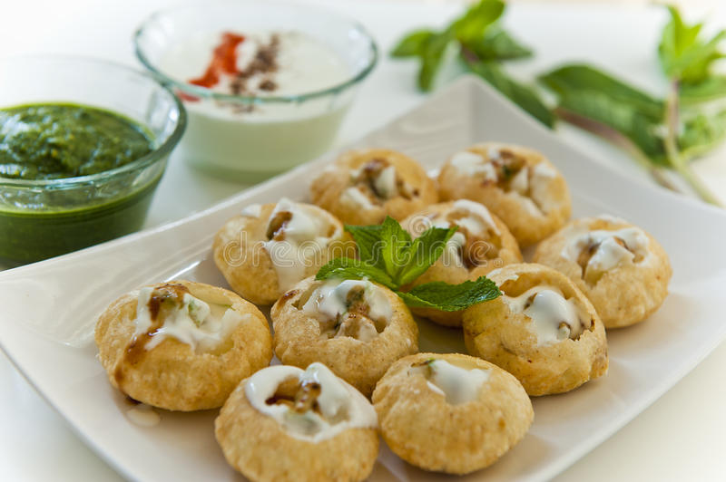

PANI PURI

Bhaiya, hum hai panipuri!
Panipuri (originally named Jalapatra from Mahabharata times)
It is a type of snack that originates from India and it's one of the most common street foods here in India.
Ingredients
- 24 to 30 puris
- 2 tablespoons Extra Virgin Olive
- 1 small bowl Tamarind Chutney
- 4 cups Water
Steps needed for making the dish:
- Heat a large saucepan on medium heat and add oil.
- Add 3 tbsp oil, crumble and mix well making sure the rava turns moist.
- Now add ¼ cup hot water and start to knead.
- Dip into theeka pani or khatta meetha pani and enjoy.
Get back to masalas